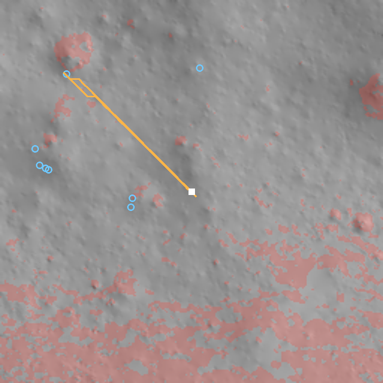

Watch a landing · Adinfinitium Pilot
Land where, and when, a mission survives.
An autonomous lander and rover for the lunar south pole, flown on real NASA terrain and tested in paired simulations.
Built on NASA LRO LOLA terrain · NASA/JPL SPICE ephemerides · PyTorch · JAX
01 · The mission
At the pole, timing is terrain.
The Sun barely clears the horizon, so a rim can be lit for weeks while a floor nearby stays dark. We pick a cell and a date, then fly it.
-
01Site 23 slope map, red is unsafe
Slope
Ground steeper than 12° is treated as unsafe. The lander must divert around it.
-
02Sun path against the skyline
Light
Solar power only works while the Sun clears the local skyline.
-
03Ridges against the Earth path
Earth link
No line of sight to Earth means no commands and no data.
-
04Sunlight on 9 cells over 30 days
Time
The same spot is a good site one week and a dead one the next.
Source: NASA LOLA 5 m terrain (Site 23) · NASA SPICE DE440
02 · The pilot
A 14.8 M-parameter pilot that only ever corrects classic guidance.
Classic ZEM/ZEV guidance always flies the lander. The network adds a small correction; untrained, it adds zero.
inputs → 8 transformer layers → 3 thrust corrections
Inputs
A 32×32 camera patch of real terrain, 21 sensor values and the classic command.
Patches: NASA LOLA 5 m/px tiles, cropped by the simulator's own code (tools/export_patches.py).
8 transformer layers
14,842,567 parameters
Real weights of the trained pilot, sampled.
Source: data/models/lander_pilot.pt (checkpoint d53a162df9) via tools/export_net.py.
3 thrust corrections
Each nudges the classic command by at most 30 % of full thrust (arrows illustrative).
+0.74 points
more landings than classic guidance on 3 maps it never saw, p = 0.019
Source: runs/lander/benchmark.json
03 · How it was built
Built in the open, piece by piece.
Source: hazard F1 from runs/hazard/eval.json, Site 23 test tile.
07 · Questions
Plain answers.
Is the terrain real?
Yes. Every simulated landing runs on NASA LOLA 5 m elevation tiles of real south-pole sites; about 11 % of those pixels are direct laser measurements and the rest are LOLA's own interpolation.
What does the AI do?
A 14.8 M-parameter pilot adds a small correction to classic ZEM/ZEV guidance during the last ~2 km, and learned hazard and light models speed up map-making. None of them flies alone: each has a physics backup.
What happens if it fails?
The physics backup takes over: classic guidance for the pilot, the slope rule for hazards, a direct ray-cast for light. The learned planner lost to the Navigator ranking on held-out data, so the Navigator ranking is what ships.
What is generated?
No terrain on this site is generated. Our terrain diffusion network was trained but lost to classical kriging (0.94 m against 1.83 m RMSE on held-out Site 23), so kriging is the terrain estimator; anything the network makes is labelled GENERATED — NOT OBSERVED. The cinematic clips are AI-generated decoration and are never used as data.
How was it tested?
The same 2,304 missions per condition were flown twice, by classic guidance and by the pilot, on three maps the pilot never saw, with engine-outs, navigation drift and blind cameras injected. The pilot then sat a final exam on Site 23, flown once: it tied classic guidance (97.95 % both).
Watch it learn.
960 simulated descents, flown three ways: Stage 1 of 3 · no guidance
no guidance 0 / 320classic guidance 314 / 320AI pilot 315 / 320the chosen path
Training curves from the real logs, measured on validation Site 11, which the models never train on.
Rover out. Working on its own.
It plans its own drive to a shadowed ice edge and back before the battery runs out.

Source: runs/ghosts/rover_lola5m_site23_2027-09-01.json (run cautious_15) · modelled · rover drawn ×16.
Six hundred drives, one rule set.
The rule drivers on unseen Site 23: who reached an ice edge, who came home, and where the battery ran out.
Next on the roadmap
Next: a swarm that evolves the policy.
Today's pilot was trained by PPO. The evolution swarm is designed and tested but has not run yet: thousands of small networks, each a correction on top of classic guidance, would fly simulated landings and the fittest of every generation would breed the next. This animation uses sample values, not results.
Sample values — the swarm has not run yet
Champion → flies the landing; then the rover drives its route. See the route

Down safe. Rover out.
Every landing here was simulated on real NASA terrain.